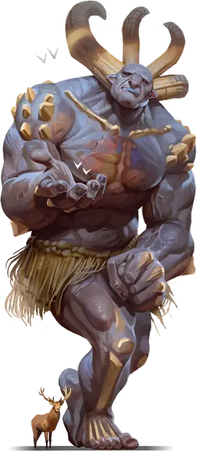

Исполин
Gargantua
Громадная Аберрация, обычно хаотично-нейтральная

Класс Доспеха 17 (природный доспех)
Хиты 388 (21к20 + 168)
Скорость 60 футов
| мод | спас | ||
|---|---|---|---|
| СИЛ | 27 | +8 | +8 |
| ЛОВ | 10 | +0 | +7 |
| ТЕЛ | 26 | +8 | +8 |
| мод | спас | ||
|---|---|---|---|
| ИНТ | 9 | −1 | +6 |
| МДР | 16 | +3 | +10 |
| ХАР | 18 | +4 | +4 |
Сопротивление урону психическая энергия, силовое поле
Иммунитет к состояниям испуг
Чувства тёмное зрение 120 футов, пассивное Восприятие 13
Языки Великаний
Опасность 21 (33000 опыта)
Бонус мастерства +7
Особенности
Жуткая аура. В начале каждого хода исполина каждое существо по его выбору, находящееся в пределах 30 футов от него должно совершить спасбросок Мудрости Сл 19. В случае провала цель воспринимает исполина как проявление худших своих страхов; она получает 17 (5к6) урона психической энергией и становится испуганной до начала своего следующего хода. В случае успеха цель становится невосприимчивой к странной ауре этого исполина в течение 24 часов.
Действия
Мультиатака. Исполин совершает две атаки Размашистым ударом или Камнем.
Размашистый удар. . Рукопашная атака оружием: +15 к попаданию, досягаемость 20 футов, одна цель. Попадание: 27 (3к12 + 8) дробящего урона.
Камень. . Дальнобойная атака оружием: +15 к попаданию, дистанция 120/480 футов, одна цель. Попадание: 24 (3к10 + 8) дробящего урона.
Бонусные действия
Зловещее проклятие. Исполин проклинает одно существо, которое он может видеть в пределах 120 футов. Цель должна преуспеть в спасброске Мудрости Сл 19, иначе становится недееспособным до конца своего следующего хода.
Телепорт. Исполин телепортируется вместе со всем носимым и несомым снаряжением, в незанятое пространство, которое он может видеть в пределах 120 футов.
Реакции
Отмахивание. Сразу после того, как исполин получает урон от существа Большого размера или меньше, которое он может видеть в пределах 20 футов, он пытается отбросить это существо. Цель должна преуспеть в спасброске Силы Сл 23, иначе цель получит 18 (3к6 + 8) дробящего урона, будет отброшена по горизонтали на расстояние до 100 футов от исполина и упадет ничком.
Копирование заклинания (1/день). Сразу после того, как существо, которое видит исполин, накладывает заклинание 5-го уровня или ниже, исполин пытается скопировать его. Это существо должно преуспеть в спасброске Харизмы Сл 19, иначе исполин немедленно наложит то же заклинание, того же уровня (+11 к попаданию атаками заклинаниями, Сл спасброска от заклинания 19), без использования материальных компонентов и самостоятельно выбирая цели заклинания.
Описание
Время от времени — возможно, раз в поколение, при определенной конфигурации звезд и планет или по прихоти какого-либо злого бога — у родителей-великанов рождается исполин. Хотя ребенок выглядит как любой другой представитель своего вида, истинная природа существа проявляется по достижении совершеннолетия: его цвет лица становится пурпурным, а на голове вырастают рога. Исполин быстро растет, в конце концов возвышаясь над другими великанами с высоты в 40 футов и более.
Большинство исполинов не чувствуют себя как дома в кланах великанов и в конечном итоге ищут дома, достаточно большие, что способны вместить их огромные тела. Они могут найти подходящий дом в древнем лесу, глубоком каньоне или огромной пещере в Подземье. Некоторые исполины ищут только покоя и уединения, в то время как другие яростно сражаются с миром, который их страшится.
Великаны рассказывают множество историй, объясняющих существование исполинов. Одна легенда связывает их происхождение с договором древнего клана с существом из Далекого Предела. Другая утверждает, что Каронтор, “изгнанный сын” Аннама, создаёт исполинов в отместку за свое тюремное заключение. Третья обвиняет Аннама, утверждая, что Всеотец великанов испытывает отвращение к своим потомкам и стремится уничтожить их.